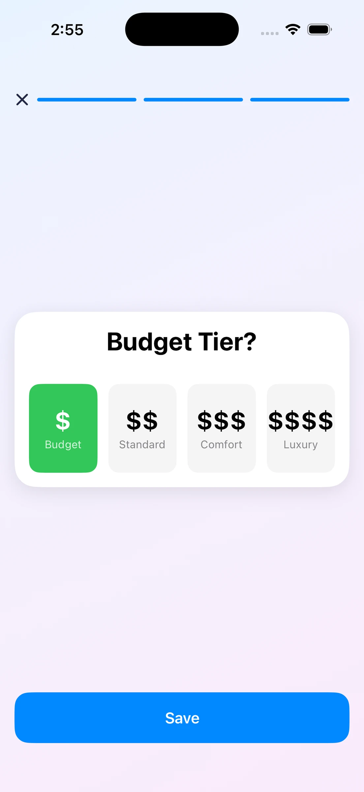
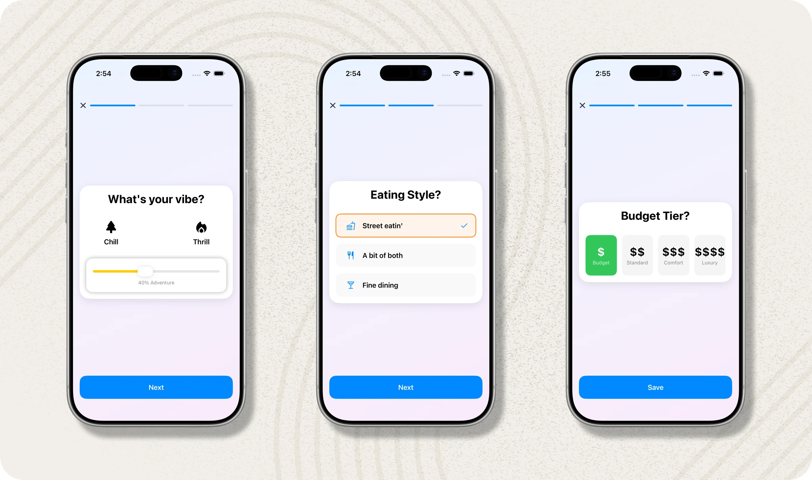
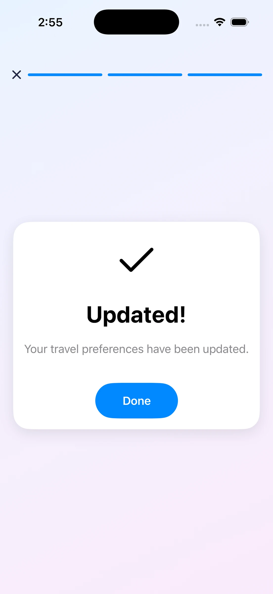
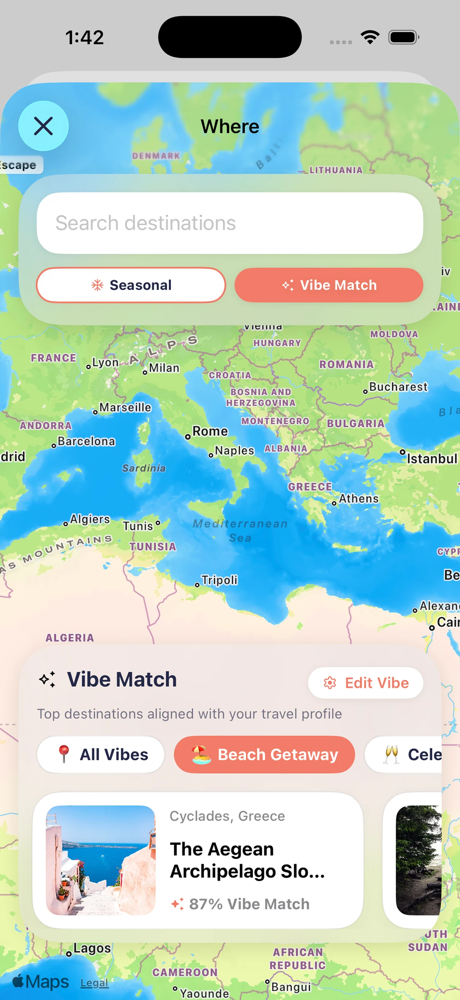
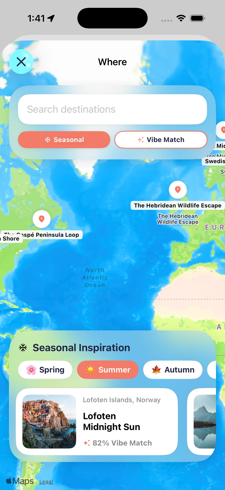
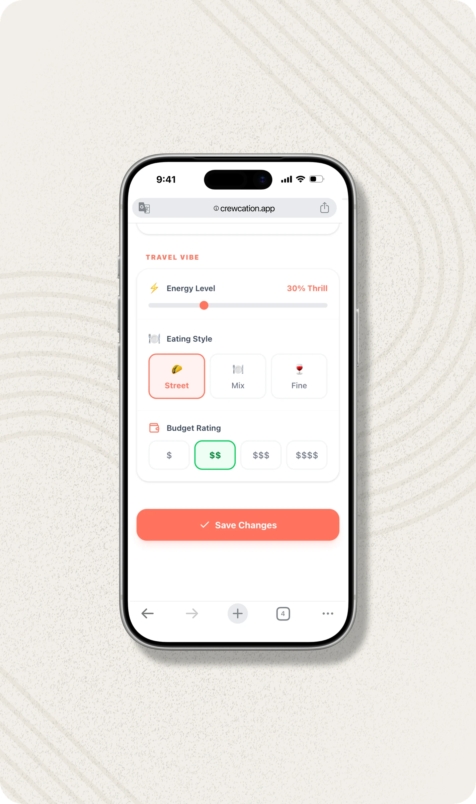

Four tiers, no numbers. This answer never leaves your profile.
This is one piece of the Crewcation case study. The Vibe Check is how Crewcation helps a group agree on where to go without anyone having to say what they can afford. I designed the questions, the privacy rule and the way answers turn into a match score, and I built it for iOS and the web.

The whole Vibe Check on iOS: three screens, one question each, a progress bar across the top.
In a group chat, the friend on a tighter budget has two options. Speak up and feel awkward, or go along and spend more than they want to. It's easy to stay quiet. [ASK RYAN: where did you see this, for example your own trips or talks with friends?] So the rule came before any screen: your budget is yours. Nobody in the crew sees it, not even the Captain.
I kept it to the three things that change a trip the most. Energy, from chill to thrill. Eating style: street food, a bit of both, or fine dining. And a budget tier from $ Budget to $$$$ Luxury. You answer once in your profile, and every trip you join uses it. A tier is quicker to pick than a dollar figure, and it means the same thing in any city. [ASK RYAN: is that why you chose tiers?]

Four tiers, no numbers. This answer never leaves your profile.

A plain confirmation, then you are back to the trip.
The app combines the crew's answers into a match score for each destination. On the Where screen, places come with a Vibe Match percentage, and an Edit Vibe button sits right there if your mood has changed. What you never see is whose budget pulled a score down. The group gets a shortlist that fits, and the money talk doesn't have to happen.

Vibe Match picks: each card shows a percentage, never a budget.

The score follows you into Seasonal ideas too.
Invited friends who don't have the app meet Crewcation in the browser. On the web, the three questions sit together in settings: an energy slider, three eating-style cards and four budget cards. Same data, same privacy rule, laid out so it's easy to see and change in one place. iOS keeps the guided, one-at-a-time flow.

The web version: all three answers on one card, each editable in a tap.
The Vibe Check also feeds the next feature. Once the crew has voted on places, Gemini will use everyone's Vibe Checks to plan the days, so a chill traveller and a thrill-seeker both get something. I haven't measured the Vibe Check with users yet. [ASK RYAN: has a group used it on a real trip, and did anyone say how it felt to set a budget privately?]